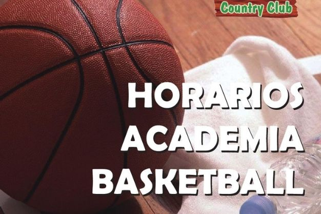
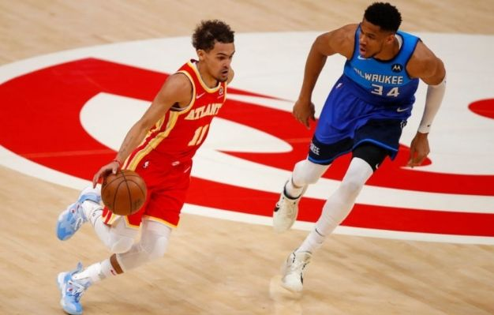
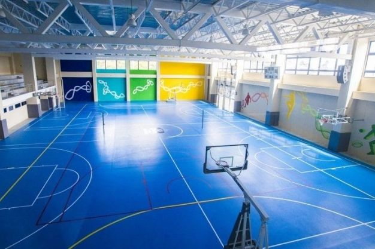
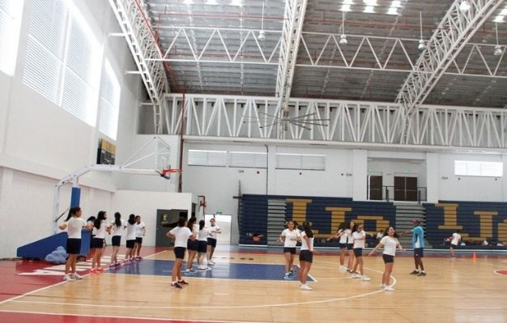

La academia de baloncestopresenta un enfoque de enseñanza de fases múltiples que se enfoca en la instrucción específica de la posición, evaluaciones del jugador y un cronograma de competición riguroso junto con todas las herramientas correctas para encontrar la postulación universitaria ideal.
Con postulación universitaria y capacitación para el reclutamiento disponibles tanto del lado académico como del deportivo, los estudiantes atletas de baloncesto crean una visión de sus próximos pasos con nuestro personal experto.
Horarios
Lunes Miercoles y Viernes

Los horarios estan ligados a 3 dias que son lunes miercoles y viernes de un horario establecido de 2pm a 6pm
Para los niños hay un horario flexible de 8am a 12am.
Partidos importantes

Los partidos importantes es lo que se ha logrado trabajar en la semana de entrenamiento para poder llevarlo a cabo en un partido official con otras academias de basquetbol
Los partidos son los sabados de 7am a 12am segun las edades de los participantes
Ubicaciones
Sucursal Colonia Monserrat

Esta ubicada en 40 av sur pasaje 9 direccion a fiscalia policial
Sucursal La Ceiba

Esta ubicada en antiguo cuscatlan por plan de la laguna.